Chapter 12. 빅데이터와 NoSQL¶
1절. 빅데이터¶
빅데이터 주요 기술¶
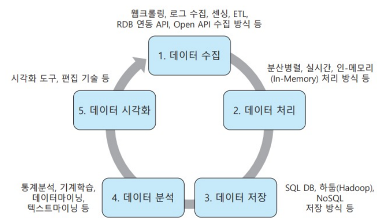
- 대용량 데이터 저장소 구축
- 적합 데이터 분석 모형 적용 후 탐색 분석 및 시각화
- 5가지 주요 기술 존재(전체 과정에서 순차적으로 활용)
- 데이터 수집
- 데이터 처리
- 데이터 저장
- 데이터 분석
- 데이터 시각화
빅데이터 수집¶
- 조직 내 · 외부 데이터를 효과적으로 수집하는 과정
- 데이터 탐색 및 수집 후 변형 과정을 통해 정제된 데이터로 만드는 복잡한 작업
- 분석 과정에서 가장 중요하면서 어려운 과정
| 분석 기준 | 설명 |
|---|---|
| 데이터 충분성 | 데이터의 축적 기간 및 분량의 충분성 등 |
| 데이터 완전성 | 데이터 누락 및 결측값의 비율 등 |
| 데이터 일관성 | 데이터 유형과 값의 일치성 등 |
| 데이터 정확성 | 데이터 편향과 분산 등 |
빅데이터 처리¶
- 데이터 처리 방식
- 대화형(Interactive)
- 일괄형(batch)
- 실시간형(Real Time)
- 처리 비중이 높은 비정형 데이터를 어떻게 분석할 것인가?
- 복잡한 처리 과정을 어떻게 분산할 것인가?
- 어떤 분석 모델을 적용할 것인가?
- 대부분 일괄 처리 or 실시관 처리 방식 적용
하둡(Hadoop : High-Availability Distributed Object-Oriented Platform)¶
- 대용량 데이터를 분산 처리할 수 있는 플랫폼
- 아파치 재단에서 공개한 자바 기반 오픈소스 소프트웨어
- 빅데이터 기술에서 가장 중요한 요소
- 빅데이터 생태계의 중심
- 수평적 확장 방식 : 분산 처리 서버의 수를 계속 늘리는 형태
아파치 하둡¶
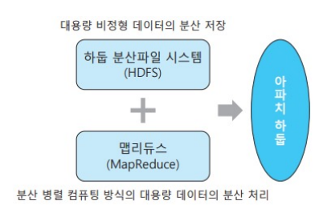
- 빅데이터는 큰 규모로 처리 시간 문제점 때문에 여러 서버에 분석 작업을 분배 후 결과를 조합하는 분산 병령 컴퓨팅 기술 활용
- 대부분의 빅데이터 처리 시스템은 대용량 데이터 수집, 관리, 유통, 분석 과정을 분산 병렬 처리
하둡 분산 파일 시스템(HDFS : Hadoop Distributed File System)¶
-
대용량 데이터를 저장하는 수백 ~ 수천 노드(서버)의 클러스터를 이용해 기가바이트 이상의 데이터를 분산 처리
-
마스터 / 슬레이브(Master Slave) 노드 구조
- 하나의 네임 노드(마스터)와 다수의 데이터 노드(슬레이브) 구성
- 네임 노드(Name Node)
- 파일 시스템의 이름 공간 관리
- 파일 접근 요청 처리
- 데이터 노드(Data Node)
- 파일 저장 및 가용성 보장을 위해 노드 간 복제 수행
맵리듀스(MapReduce)¶
- 대용량 데이터 분산 병렬 처리를 위해 구글에서 만든 소프트웨어 프레임워크
- 병렬도가 높거나 단순한 작업에 효과적
- 실시간 처리에 부적합
- 분산 병렬 컴퓨팅
- 분할 정복 방식
- 대량의 데이터를 작게 분할하여 여러 노드에 분산 처리
- 장점
- 장비에 추가가 쉬움
- 비용 대비 데이터 처리 속도가 빠름
- 반복되는 읽기에 최적화된 기술
- 단점
- 실시간 데이터 분석에 부적합
- 데이터 변경이 어려움
맵리듀스 단계¶
맵(map) 단계¶
- 데이터를 여러 개의 스플릿(split) 조각으로 나눠 맵 함수(mapper)에 입력
- 맵 함수는 나누어진 스플릿 조각 수만큼 서버에서 병렬 처리
- 문서와 같은 비정형 데이터로부터 <키, 값>의 쌍으로 매핑된 정형 데이터 생성
- 불필요한 레코드들을 제거
- 입력 데이터를 원하는 형태의 데이터로 묶는 작업을 수행
셔플(Shuffle) 단계¶
- 맵의 결과는 셔플(shuffle) 작업을 통해 통합
- 다음 단계인 리듀스의 입력
- 맵 단계가 완료되면 추출된 <키-값> 형태의 분석 대상 레코드들을 정렬
- 정렬된 레코드들은 같은 키를 갖는 값들을 하나의 리스트로 묶어서 리듀스 단계로 전달
리듀스(Reduce) 단계¶
- 셔플 단계로부터 전달받은 입력값을 리듀스 함수(reducer)를 통해 중복 데이터를 제거하고 원하는 데이터만 추출하는 작업 수행
- 리듀스 함수는 전달받은 레코드를 축소
- 새로운 <키-값>의 쌍 생성
- 하둡 분산 파일 시스템인 HDFS로 내보냄
2절. NoSQL¶
빅데이터 저장과 NoSQL¶
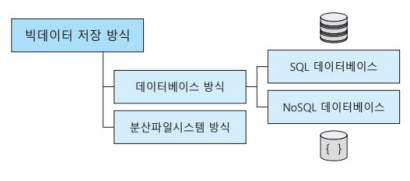
- 수집 과정을 통해 확보한 빅데이터로부터 유용한 정보를 추출할 경우 효과적인 데이터 저장 및 관리 필요
- 정형 데이터 : SQL 데이터베이스에 저장
- 반정형 데이터 : SQL 데이터베이스 or NoSQL 데이터베이스에 저장
- 비정형 데이터 : NoSQL 데이터베이스 or 분산 파일 시스템에 저장
SQL 데이터베이스¶
- 미리 정의한 스키마를 가진 구조화 정형 데이터 저장
NoSQL 데이터베이스¶
- 고정된 스키마 없이 자유로운 필드 추가 가능
- 스키마가 유연하거나 생략될 수 있는 반정형 or 비정형 데이터 저장
분산 파일 시스템¶
- 주로 내부 구조가 없는 비정형 데이터 저장
- 분산 파일 형태로 확장이 가능하도록 저장
관계형 데이터베이스 한계¶
- 규격화된 데이터를 주로 저장하며 폭발적으로 증가하는 비정형 데이터 저장에 한계 존재
- 고가의 서버 확장과 용량 확대를 위해 큰 비용이 요구되어 확장은 쉽지 않음
- 빅데이터 환경에서 요구하는 대용량 데이터의 읽기와 쓰기, 빠른 응답시간, 높은 가용성 등은 기존 SQL 데이터베이스로 효율적 지원이 어려움
NoSQL 데이터베이스¶
- 관계형 데이터베이스의 한계에 대한 새로운 대안
- Not Only SQL 또는 Non SQL의 줄임말
- SQL 이외에도 사용 가능한 비관계형 데이터베이스
-
NoSQL 사용의 가장 큰 강점 : 분산 환경
-
데이터를 여러 서버에 분산 저장하고 운용하는데 필요한 최적화된 기능 제공
-
단일 서버의 관계형 데이터베이스로는 감당하기 어려운 대용량 데이터를 병목 없이 우수한 성능으로 제공
-
SQL 데이터베이스에 비해 유연하고 확장성 있는 모델 지원
- SQL과 NoSQL은 대체제의 관계가 아닌 "상호 보완적" 관계
SQL VS NoSQL¶
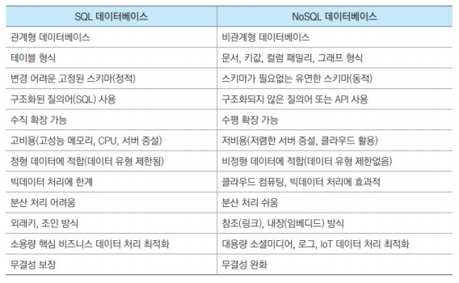
NoSQL 데이터베이스 유형¶
1. 키-값 데이터베이스(Key-Value Database)¶
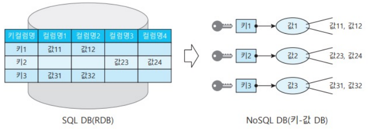
- 가장 단순하고 기본적인 형태
- 모든 데이터를 '키'와 '값'의 쌍으로 매핑하여 저장
- 키(Key) : 속성 이름
- 값(Value) : 속성에 연결된 데이터 값
- 조회를 위한 유일한 키와 하나의 데이터 값을 매핑해 정해진 스키마없이 저장
- ex) 수하물 태그는 키(Key), 수하물 짐은 값(Value)
- 장점
- 데이터 분할 가능
- 다른 데이터베이스로 불가능한 수준까지 수평 확장 가능
- 단점
- 특정값 검색만 효율적
- 데이터 정렬, 그룹화, 범위 검색 등이 어려움
2. 문서 데이터베이스(Document Database)¶
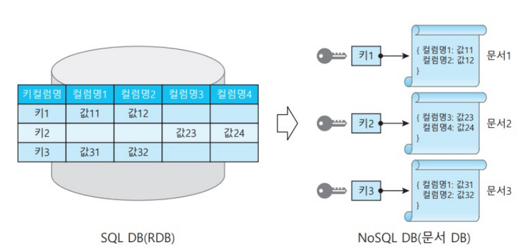
- 키-값 데이터베이스의 발전 형태
- 반구조적 데이터의 저장과 검색에 사용
- '키-문서' 데이터베이스 형태
- 키에 대응하는 값이 문서
- 문서
- 속성과 속성에 대응하는 데이터 보유
- 반구조화(Semi-Structured) 데이터
- 계층적 구조
- 객체와 유사하게 하나의 단위 취급(JSON, XML 등)
- 스키마가 자주 바뀌거나 저장할 데이터가 복잡한 계층 구조를 가진 경우
- 문서 간 비교보다 문서 자체의 검색과 변경이 대부분일 경우 효과적
- NoSQL 데이터베이스 중 가장 인기있는 유형
3. 컬럼 패밀리 데이터베이스(Column Family Database)¶
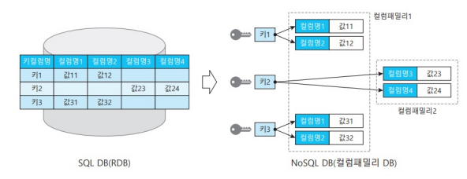
- 구조 측면에서 가장 복잡한 유형
- 관계형 데이터베이스와 비슷한 유형
- 기본 저장 단위 : 컬럼
- 키에 대응되는 '(컬럼명, 값)' 조합으로 된 여러 필드 보유
- 컬럼 단위로 묶어서 저장하는 컬럼-지향(column-oriented) 데이터베이스
- 하나의 행에 많은 컬럼을 포함 가능
- 높은 유연성과 분산 저장 및 확장이 가능해 빅데이터에 유리한 구조
- 컬럼 패밀리
- 연관된 컬럼끼리 묶은 컬럼 그룹
- 모여서 하나의 객체 표현
- 미리 정의된 고정 스키마 미사용
- 얼마든지 컬럼 추가 가능
4. 그래프 데이터베이스(Graph Database)¶
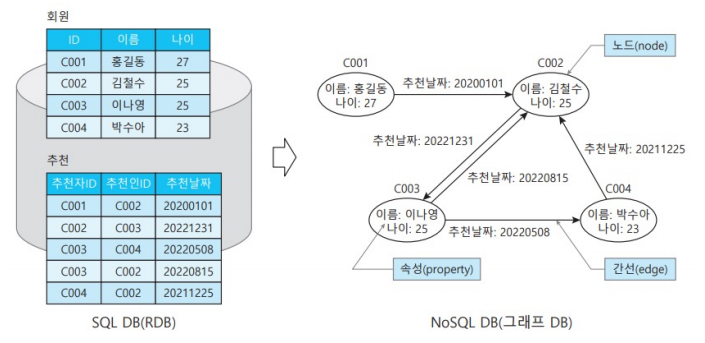
- 데이터를 데이터 간 관계와 함께 표현하는 특수한 유형
- 많은 객체 간 연결 표현에 적합
- 소셜 미디어
- 교통망
- 전력망
- 노드(Node)
- 객체 표현
- 식별자와 객체 속성 존재
- 링크(Link)
- 두 객체 사이 연결 관계 표현
- 노드 간 연관 속성 저장
빅데이터 분석¶
- 분류(Classification) 분석
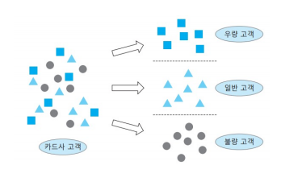
- 군집(Clustering) 분석
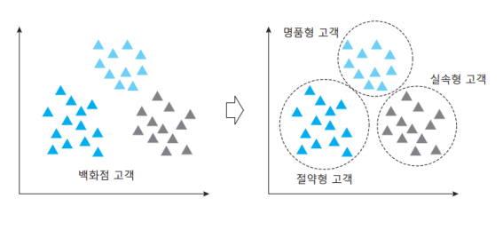
- 연관(Association) 분석
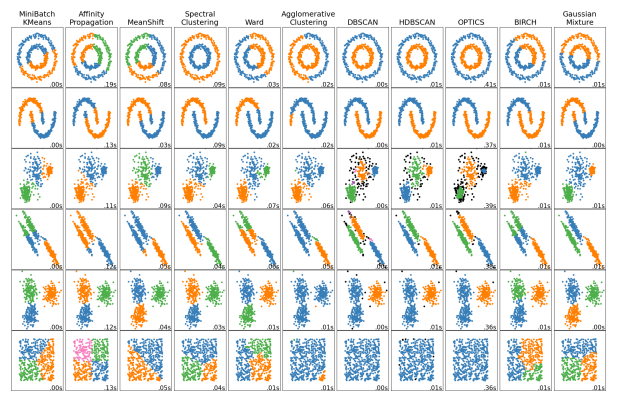
- 예측(Forecasting) 분석
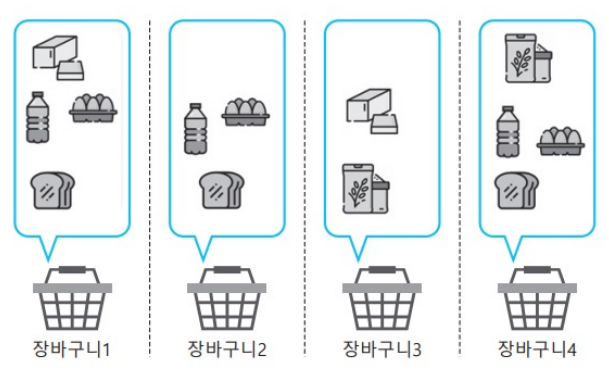
빅데이터 탐색¶
- 데이터를 깊이 있게 이해하기 위해 여러 통계 기법과 시각화 방법을 적용하여 측정값을 관찰하는 과정
빅데이터 해석¶
- 분석된 데이터에 의미를 부여하고 지식화하는 과정
- 분야 별 유용한 분석 방식을 선택적으로 적용함
- 정보 도출 및 해석
- 빅데이터를 분석하여 새롭게 얻게 되는 지식이나 식견, 시사점 등 통찰(insight)이 중요
빅데이터 시각화¶
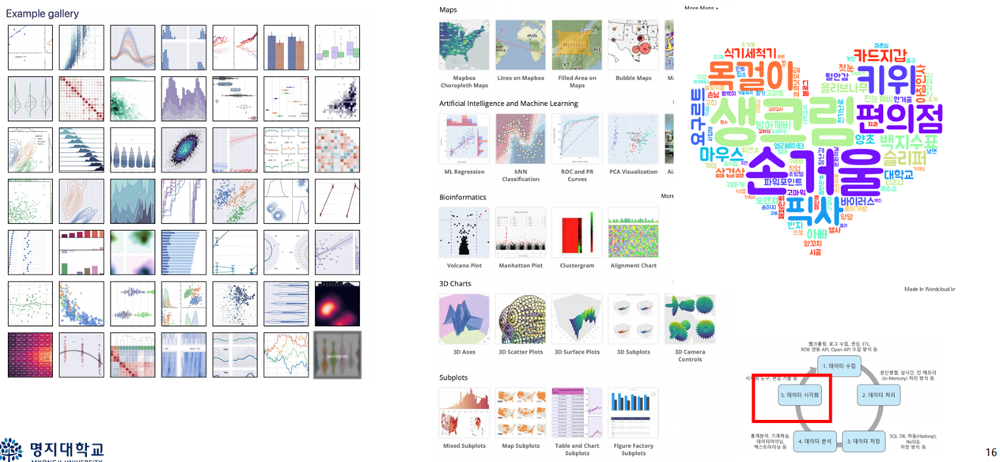